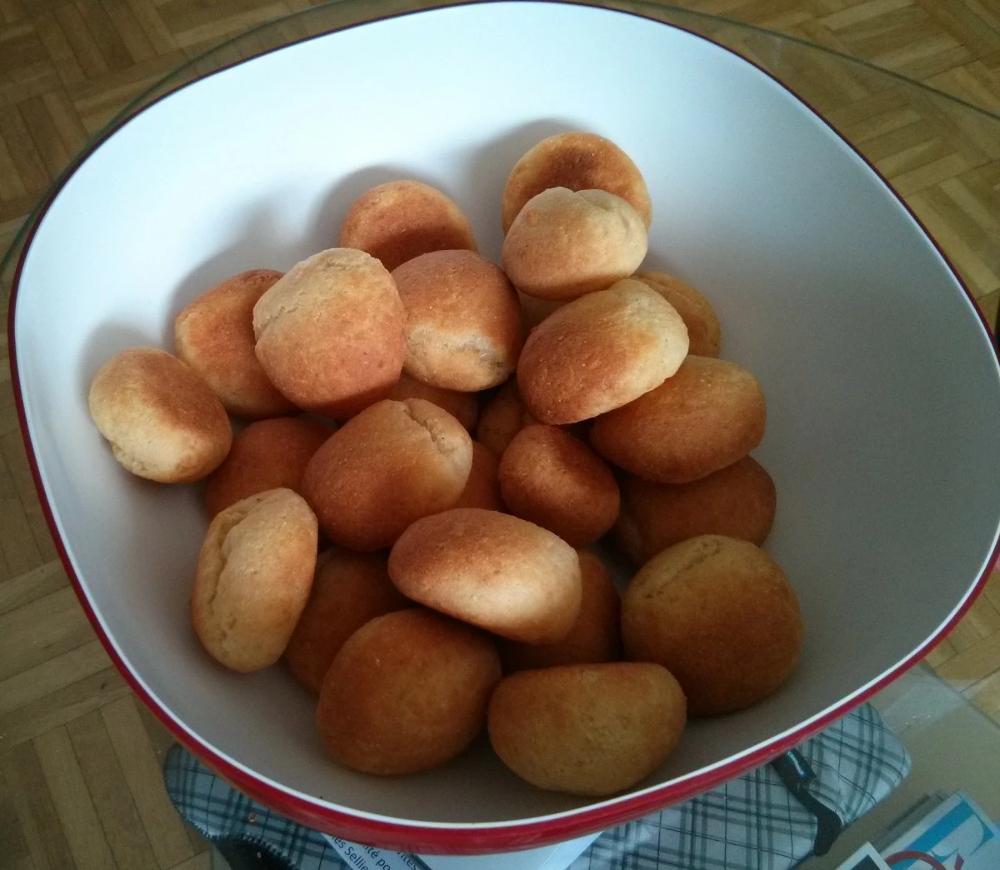

Quand j’allais en Équateur mon grand-père préparait pour le petit déjeuner des Pan de Yuca. Des petits pain au manioc. On peut les manger pour le petit-dèj, le gouter ou bien pour l’apéro, nature ou accompagné de yaourt ou encore de piment à base de tomate de arbol (tamarillo en français, pratiquement introuvable en France).
Pendant 20 ans (littéralement !) ma mère a essayé d’imiter la recette avec des succès mitigés. Est-ce qu’on nous cachait la recette originale ? Est-ce les ingrédients qui n’étaient pas assez bon ?
Puis, je tombe un jour par hasard sur un blog de recettes de cuisine : http://laylita.com tenu par une exilée équatorienne qui porte le même nom que ma mère et qui propose une recette qui fonctionne ! La voici : http://laylita.com/recipes/2008/01/14/pan-de-yuca-pan-queso/
Vu le succès qu’ont ces pains, je dévoile le secret.

Ingredients pour 24 pains (soit 4 personnes)
- 150g de farine de Manioc (aussi appelé Foufou, Bon Foufou, tapioca, amidon de manioc, fécule de manioc...). Ça se trouve facilement dans toute épicerie africaine
- 2 boules de mozzarella
- 1 pincée de sel
- 75 g de beurre à température ambiante en petit morceaux
- 1/2 sachet de levure chimique
- 1 gros œuf (ou deux petits)
Autant dire que ça ne va pas vous ruiner.
Les quantités sont assez approximatives, c’est pas de la pâtisserie à la française. En particulier j’ai l’impression que la farine change à chaque fois.
Préparation
- Râper la mozzarella. C’est l’étape la plus fastidieuse
- Mélanger tout sauf le beurre et l’œuf
- Rajouter le beurre et l’œuf
- Pétrir
- Ajuster la consistance avec un peu d’eau ou un peu de farine
- Faire des petites boulettes de 2 cm de diamètre. Profitez-en pour avoir un peu de fantaisie et faire autre chose que des boulettes
Cuisson
- Préchauffez le four à 250°
- Placez les boulettes bien espacées sure une plaque
- Cuisez les boulettes environ 7 minutes
- Dès que c’est doré, c’est bon
- Évitez de faire trop cuire, ça deviendrait trop sec
OMN NOM NOM
Attention, ça part très vite ! Ça tombe bien, ça ne se conserve pas très bien.